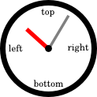
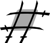

Learn its code
Let's start with a simple example to see how the border-image ninja can be invoked and given instructions:
#element {
border-width: 10px 15px 12px 13px;
border-image: url("border.png") 30% 35% 40% 30% round round;
}The first property obviously describes one element's borders as usual: the widths of the four borders are expressed in pixels, clockwise (border-top, border-right, border-bottom, border-left).
Needless to say that, using this syntax:
- when omitting to specify the border-left width, the browser uses the border-right value,
- when omitting the border-bottom value it uses the border-top value,
- when specifying only one value, it will be used for the four borders.
#element {
border-width: 12px 12px;
/* Is equivalent to */
border-width: 12px;
}#element {
border-width: 10px 15px 10px 15px;
/* Is equivalent to */
border-width: 10px 15px;
}The same principles will apply to the second part of the next property.
The second property is the one which will actually invoke our zealous ninja. There are usually three parts in a border-image property (although if you read the specification carefully, you will find a fourth one, which would only be confusing at this point):
-
This part indicates the location of the image that will be sliced to decorate our element. Nothing really original here, the background-image uses the same syntax. And this is our image:url("border.png")
-
The second part describes the way our ninja will slice the image into nine parts (slices):30% 35% 40% 30%
Guess what will happen to this poor image... (hint: ninjas are merciless).
Those values can be expressed either in percentages or without any unit to slice an exact width of pixels from the image. -
The last part is the stretch value. It describes how the slices for the sides and the middle part are scaled and tiled. A few things to remember:round round- specifying only one value is the same as specifying twice the same one,
- there are three possible values: "stretch", "repeat" and "round",
- the default value is "stretch".
Curious developers willing to know what happens when using borders with null width, or when using two different "stretch" values, should read the original specification.
See what it can do
You have the resources to be creative, imaginative and you certainly have an opinion about beauty. The border-image ninja doesn't know anything about that, it is just really good at martial techniques; it is only a tool allowing you to express yourself. Here is what it can do when asked for some purely technical demonstrations:
Rounded corners
border-width: 10px;
border-image: url("media/roundedCorner.png") 20;Complex borders
border-width: 20px;border-image: url("media/border.png") 20;Drop shadow
border-width: 10px;border-image: url("media/blackShadow.png") 5;Tab
border-width: 15px 20px 0;border-image: url("media/tab.png") 20 20 0;Stretching background
to be
lazy
border-width: 10px 10px 0;
border-image: url("media/gradient.png") 10 10 0;And even multi-state buttons
But not impossible.This one is tricky.Start using it today
Currently this property is only implemented in the upcoming Firefox3.1 and recent releases of Safari and Chrome. But most current browsers implement features that are able to slice images:
- The canvas element and its drawImage method, available in firefox2+ and recent releases of opera browser.
- VML, its image element and its crop properties available in ie6+.
Those features could only be compared to a katana. A ninja still has to be created to use it and produce the same effect as border-image: create nine slices from the image one by one, and then tile them in the background of our element.
There is such a ninja living in this very page: jquery.borderImage.js.
Limits of border-image
This property is not implemented in all browsers. Although it is possible to emulate it, one can neither expect the same level of quality, performance nor conformity to the specification. Moreover, it cannot be done without alterations to the DOM of Web pages:
- Nine <img>s that will display the slices have to be inserted inside the element,
- the content of the element has to be wrapped and positioned to appear on top of the background slices,
- the element itself has to be positioned (in relative or absolute) for the slices to scale seamlessly with the element,
- elements displayed inline have to be switched to inline-block for the slices to be correctly tiled inside the element.
Only the stretch keyword can be implemented. Supporting both repeat and round would involve creation of countless background <img>s (which is not reasonable for performance reasons), and it would be impossible to make them scale dynamically with the element.
A useful ninja for modern Web design
Nowadays, there are too many browsers available, too many operating systems being used (each one with its own set of fonts), resulting in so many configurations that trying to create a cross-browser pixel-perfect Web design appears to be a dead end. You should rather consider building Web design using simple tools such as border-image that degrade gracefully in older browsers but always keep a clear separation between content and presentation, thus easing maintenance of your code.
A first implementation: jquery.borderImage.js
This page uses a script that is a partial implementation of border-image, packaged as a plugin for the popular jQuery library. Dependence on jQuery features has been kept minimal in order to ease reuse of the script with other popular libraries. Following is the kind of JavaScript code to write instead of using the css property:
$('#element').borderImage('url("border.png") 30% 35% 40% 30%');Depending on browser features, this script will either use native implementation of the CSS property, or try to use canvas or vml instead. It is only a partial implementation of the property since only the stretch value is available, for reasons explained above. It works better on block or inline-block displayed elements; visual result is not guaranteed to be cross-browser on inline elements.
Get the code
The script is dual licensed under MIT and GPLv3 licenses and is available on github for download.
Everyone is encouraged to port this piece of code to his/her favorite JavaScript library and to encourage other people to use it : ) I will be happy to provide help with this: public@lrbabe.com
Browsers compatibility
jquery.borderImage.js has been tested on the following browsers:
- Firefox 2.*, Firefox 3, Firefox 3.1
- Safari 3.*
- Chrome 1.0
- Opera 9.*, Opera 10
- IE7
There is still a bug on IE6 that prevents its use on large elements (more than 100px wide or tall) and there are some graphical glitches when using transparent/semi-transparent png images. The way VML is handled in IE8 also changed a little bit and a fix is on its way to make the script compatible with this browser. In the mean time, the IE7 meta tag can be used:
<meta http-equiv="X-UA-Compatible" content="IE=7" />Resizing an element dynamically
When dynamically resizing an element, every slice but the edges are supposed to be scaled seamlessly. However, when using an animation (such as jQuery's animate function), border slices temporarily disappear when resizing the element directly if border-image is emulated. One should rather resize the content of the element or use the provided helper function:
$('#element').biResize({height: '200px', width: '300px'}, options);Note that it is not possible to dynamically resize the borders' widths.
Creating multi-state buttons
Browsers supporting border-image natively could be asked to slice a different image for each state of the button:
.button a {
-moz-border-image: url("media/button0.png") 0 5;
-webkit-border-image: url("media/button0.png") 0 5;
}
.button a:hover {
-moz-border-image: url("media/button1.png") 0 5;
-webkit-border-image: url("media/butto1.png") 0 5;
}
.button a:focus {
-moz-border-image: url("media/button2.png") 0 5;
-webkit-border-image: url("media/button2.png") 0 5;
}But in browsers emulating border-image, performance is an issue for this kind of operation, buttons would flicker each time their state changed if using this kind of code:
$('.button a').borderImage('url("media/button0.png") 0 5')
.mouseover('url("media/button1.png") 0 5')
.focus('url("media/button2.png") 0 5');
It is more efficient to slice the different images for each state once, and display only slices corresponding to the current state of the button. jquery.borderImage.js provides a way to slice, in the same way, different images for a single element:
$('.button a').borderImage(
'url("media/button0.png") 0 5,
'media/button1.png',
'media/button2.png'
);But borderImage isn't aware what image corresponds to what event. A hybrid JavaScript/css solution has to be used for that purpose. Note that browsers with native implementation have to be handled separately in CSS when using the alternative image syntax.
<script>
$('.button a').borderImage(
// Slices from this image will be tagged with class 'image0'
'url("media/button0.png") 0 5',
// Then specify as much alternative image as needed.
// Just add any number of image's URL as String parameter.
'media/button1.png', // Tagged 'image1'
'media/button2.png' // Tagged 'image2'
// The most performant solution is to switch class of the button on an event,
// and then let css switch display of the slices.
).mouseover(function(){
$(this).addClass('bi1')
}).mouseout(function(){
$(this).removeClass('bi1')
}).focus(function(){
$(this).addClass('bi2')
}).blur(function(){
$(this).removeClass('bi2')
});
</script>
<style>
.button a {
border: solid transparent;
border-width: 0 8px;
}
.button a:focus {
outline: none;
}
/* All slices are hidden under the button by default */
.button a .biSlice {
z-index: -1;
}
/* Only slices from the first image are visible */
.button a .image0 {
z-index: 0;
}
/* browsers using native implementation are handled with css */
.button a {
-moz-border-image: url("media/button0.png") 0 5;
-webkit-border-image: url("media/button0.png") 0 5;
}
/* When class of a button is switched, the alternative images are made visible */
.button a.bi1 .image1 {
z-index:e 0;
}
/* Same effect but for browsers using native implementation */
.button a.bi1 {
-moz-border-image: url("media/button1.png") 0 5;
-webkit-border-image: url("media/butto1.png") 0 5;
}
.button a.bi2 .image2 {
z-index: 0;
}
.button a.bi2 {
-moz-border-image: url("media/button2.png") 0 5;
-webkit-border-image: url("media/button2.png") 0 5;
}
<style>